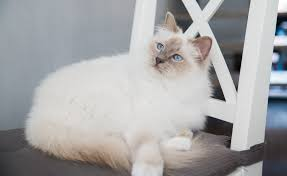

De rasstandaard
voor puntenschaal

- Lichaam: Middelzwaar en enigszins gestrekt. De benen kort en stevig, voeten rond. De kat moet goed geproportioneerd zijn. Katers zijn steviger gebouwd dan poezen.
- Kop: Krachtige schedel met volle, ronde wangen, enigszins gewelfd voorhoofd. Middellange neus, geen stop. Stevige kin. De oren zo mogelijk klein en enigszins rond. Niet te hoog op de schedel geplaatst met enige ruimte ertussen.
- Ogen: Diepblauw, bijna rond of enigszins ovaal van vorm.
- Vacht: Lange tot halflange vacht al naargelang het gedeelte van het lichaam. Weinig ondervacht, zijdeachtige textuur. De vacht is lang op de rug en de flanken. In het gezicht is de vacht kort, wordt geleidelijk langer op de wangen. Volle halskraag is wenselijk.
- Kleur: De Heilige Birmaan heeft op het gezicht, de oren, de poten, de geslachtsdelen en de staart dezelfde aftekening als bijvoorbeeld de Siamees. De voeten zijn echter wit en moeten gelijk zijn en goed contrasteren met de lichaamskleur. De rest van de vacht is licht, de rug is goudbeige bij alle variëteiten. De kleur van de buik is zeer licht. Het volgende is fout: een puur witte of gekleurde vlek op de borst of de buik. De kleur van de points en de rest van het lichaam is slechts bij volwassen katten volledig ontwikkeld.
- Voeten: Het bijzondere van de heilige birmaan zijn de witte voeten, ook wel "handschoenen" genoemd. Het wit is volkomen zuiver; het kan ophouden aan de teenwortels of aan het gewricht, waar het niet overheen mag komen. Als het wit van de handschoenen van de voorpoten aan de zijkanten of achterkanten oploopt, is dit een fout. Op de achterpoten moet het wit op de voetzolen uitlopen in een punt of omgekeerde "V", die de helft tot drie vierde deel van de voetzool beslaat. Kortere of langere "sporen" zijn acceptabel, maar het wit mag de hiel niet passeren. Iets langere handschoenen aan de achterpoten wordt getolereerd. Belangrijk is vooral de gelijkmatigheid en de symmetrie van de handschoenen. Het wit is gelijkmatig verdeeld over beide voeten voor, of beide voeten achter, of, wat nog beter is, tussen de poten onderling.
- Staart: Van gemiddelde lengte, dun aan de wortel en dicht behaard aan het uiteinde. Knikken en knopen zijn niet toegestaan.
- Opmerking: Deze standaard beschrijft, zoals het ook het geval is bij andere rassen, de perfecte uiterlijke eigenschappen. Foutloze katten zijn een uitzondering, maar fouten zijn bij de heilige birmaan snel te herkennen. Vooral onregelmatige handschoenen vallen op. Daarom moeten voor de fok overwegend katten met de grootst mogelijke regelmatigheid van handschoenen worden geselecteerd zonder daarbij echter de overige kenmerken uit het oog te verliezen.
De schoonheid van de Heilige Birmaan is het harmonieuze totaalbeeld en daarop moet hij ook worden gekeurd.
Fouten die een titel uitsluiten:
Witte vlekken in gekleurde gedeelten of andersom. Een witte vlek op de geslachtsdelen. Oplopen van het wit van de handschoenen aan de poten. Afwezigheid van sporen.
Puntenschaal:
- Lichaam: 20
- Kop en ogen (vorm en kleur): 20
- Kleur en aftekening: 15
- Handschoenen voor: 5
- Handschoenen achter: 5
- Sporen achter: 5
- Gelijkmatigheid: 5
- Staart: 10
- Vacht: 10
- Conditie: 5
Totaal 100
terug